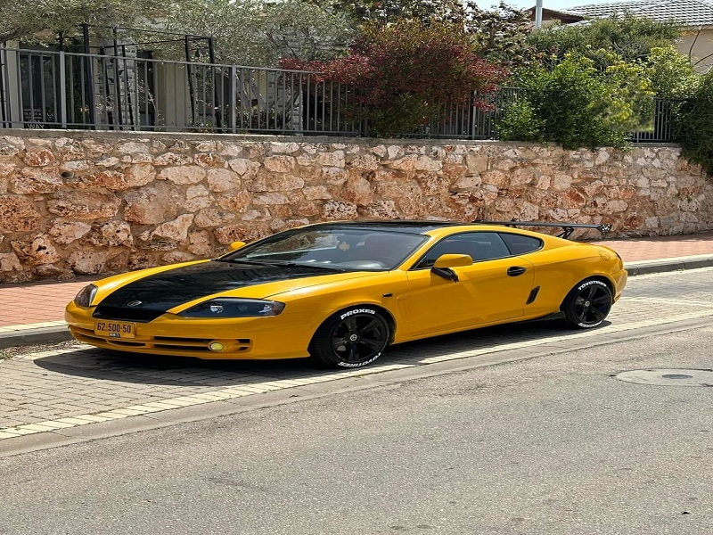
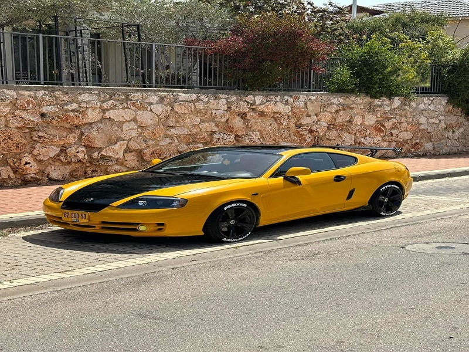
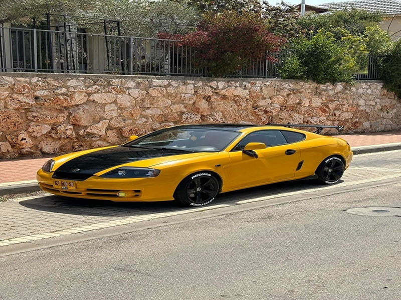

Image For GK-1 Model


 



Tuscani
The Hyundai Tiburon first went into production in 1996, and was available in some foreign markets with multiple options. In the United States, the Tiburon debuted in 1997, featuring a modern design and good performance. All models built between 1996 and 2002 were known as the "RD" Tiburon, with a range of versions offered that included options including ABS, airbags, and a panoramic roof. In 1998, the company dropped a weak engine option, resulting in a standardized engine for all models.
In 2000, a new update to the model was released, called the RD2, which saw improvements to the exterior, including the headlights and rear bumpers. This model was marketed in South Korea as the "Tiburn Turbolance". Production of the first generation Tiburon continued until 2001, then Hyundai launched the new generation Tiburn in 2002, which was more modern in design, with improvements in dimensions and interior space.
The Hyundai Tiburon features a variety of options that enhance its appeal and value in the market. Options available on different models include
When the car was first released in 2003, which was the new rebuild, everything about it was changed, including the chassis. Everything was different from the old Coupe or the first generation. It was only available as a V6 and was named as Tuscani Elise GT. This was the main version of the car released at that time. After Hyundai released this version, the car saw some success and gained popularity due to its design, among other factors. At that time, Hyundai released the 2000cc version and 1600cc version as an official version available in Europe and America and called Tiburon. Even in Greece, when the car was released, a 1.6L turbo version was introduced, with a small turbo on the old 1600cc engine. This version wasn't very popular and was also released in Romania as a 1.6L turbo. Now,Let's moving on to the real differences between the two cars:
In 2005, Hyundai made minor changes to the 2006 GK model, the version that was expected to be replaced soon. These changes included a more streamlined headlight design in black, with a redesigned taillight design to be more modern and attractive. In addition, the front spoiler was improved to look more aggressive and elegant, and a variety of alloy wheel designs were available to add a sporty touch to the car. Hyundai also added a luxurious touch to the cabin with colored stitching on the leather seats, while the option of half-leather seats was offered for the 1.6-litre model. In 2007, another update was launched for the GK model, but this time the update was more comprehensive and influential on the appearance of the car, so much so that in some markets such as the UK it was called the "SIII Coupe". The update included significant changes to the car's design, as it was sometimes classified as a fourth generation of the model, evoking the designs of the previous RD1 and RD2. The headlights were slimmer, more angular and aggressive, giving them a closer look to the original Tiburon headlight design, but with straighter, sharper lines. The taillights, on the other hand, were similar to those on the RD2 and GK1, but were smaller and featured aftermarket styling cues. Additionally, the famous “gill fin” side fenders were removed, making the design more streamlined and elegant. Inside, minor updates were made to enhance the cabin's appeal, such as the introduction of brushed aluminum accents, and the replacement of the instrument cluster backlights with new blue lighting that gives a more modern and progressive feel. The seat design was also modified to be more comfortable and supportive for passengers, enhancing the overall driving experience
üìå Is the difference only in the engine?
Can you simply swap one engine for anotherü§î?
When we look at the car, we find that there are many differences.
Yes, it has the same chassis and the same platform,
similar to BMW cars where the same chassis can be used with different engines.
The platform is designed to accommodate engines ranging from 1600cc to 2700cc,
including the V6. However, there are some differences.
1 First: The front suspension system is different.
The manual transmission of the V6 is completely different from that of the 1600cc or 2000cc versions.br
2 Second: There are many different parts under the car,
including the left control arm, a different steering column,
and other components with different dimensions than those of the 1600cc version.
3 Third: The shocks are different, but you can swap them,
although this may cause some problems such as the car sitting a little lower than normal,
and the engine may move. You can overlook that, but the shock loading is completely different.
4 Fourth: The fuel pump pressure rating is completely different.
The pressures in the 1600cc and 2000cc versions will not work with the V6.
There are many mechanical differences in the car,
and there are also differences in the options available across the different models.
Source Of Defrence: Ahmed Salem
Options and Equipment Available options vary by model and market, but available features include:
2004:2007 models received a 4/5-star rating from the National Highway Traffic Safety Administration in the United States.
